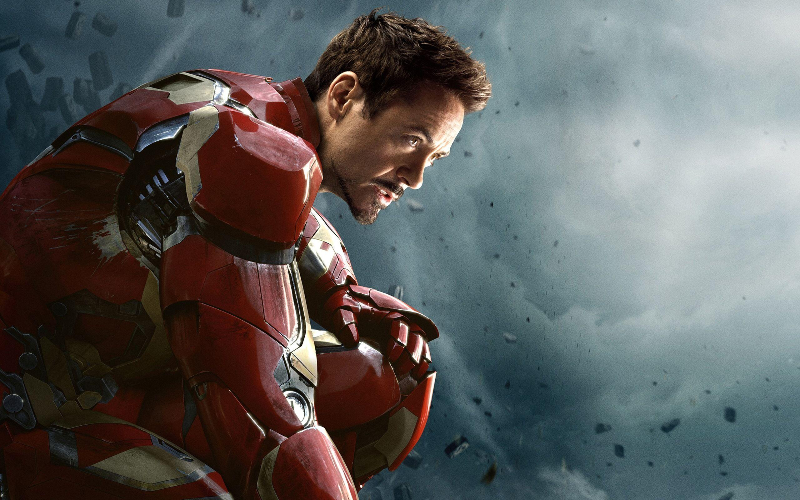

I am currently persuing M.S. Applied Computer Science Program in Northwest Missouri State. Prior to this, I have 3.6 years of relevant experience in the Information Technology Industry. I worked as a Project Engineer at Wipro Limited, Hyderabad, India and as a Software Engineer at Universal Electronics Inc, Bangalore, India.
I love Iron Man because he is one of the most relatable superheroes. ' Though he is rich and successful, he is an average human being with everyday struggles. He has panic attacks and relationship issues just like everyone else, and we get to see this side of him occasionally in the movies.
Here's an Image from the Movie 'IronMan' starring 'Robert Downey Jr' 